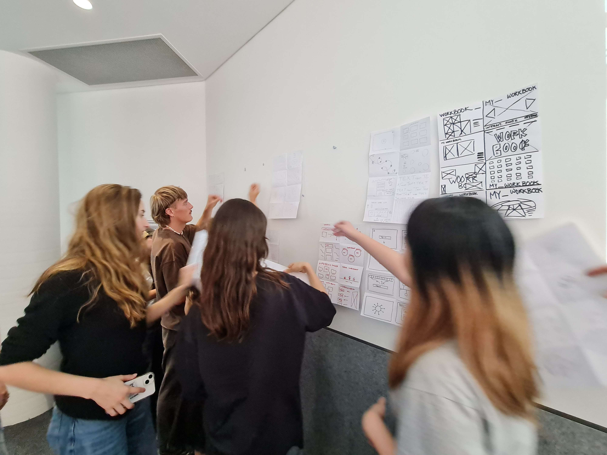
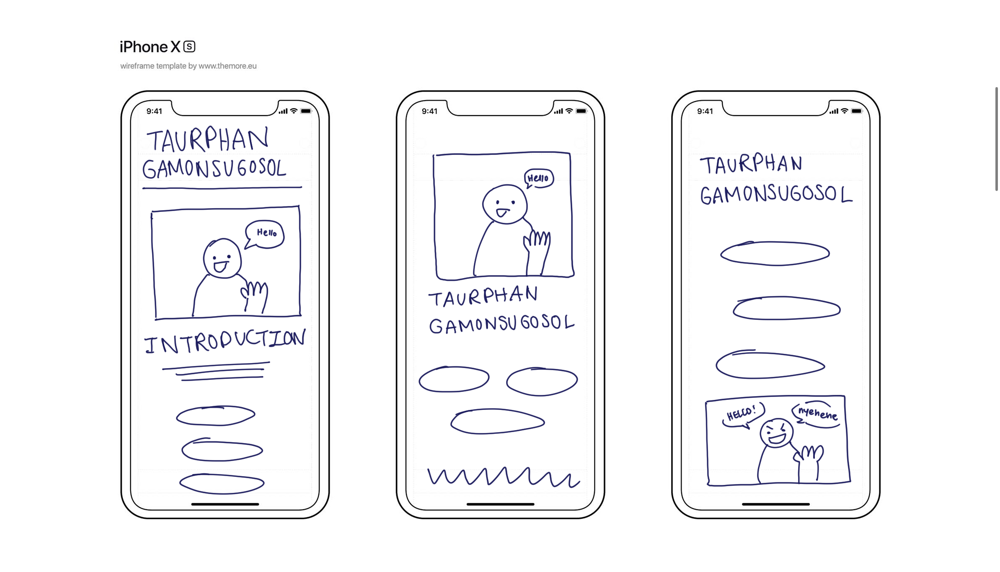

WEEK ONE
In this class I was given an introduction to how this class was going to play out as well as how to set up a website.
What is interactive media studio?
How to quickly and effectively jump between the real life world and the online world - the reciprocal loop of being in an increasingly digital world.
You won’t come out as a master coder. But you’ll have the language to communicate with someone who does know code and interpret your ideas.
This Week's Interactivity
We designed a fake website and laid out little paper tabs to show off an example for how to organise our HTML and CSS. This was deeply foreign to me as someone WHO KNOWS NO CODE. I'll be honest, I don't know how I made out of it alive.
WEEK TWO
Websites are like little digital campfires, around which we tell each other stories.
What goes into a notebook?
This Week's Interactivity
This week we learned about paper prototyping. As the name suggests, it's all about figuring out the layout or the general idea of what your website (or whatever you're making) will look before you actually make it. This process reminded me of the blue sky stage in Disney. The Disney park imagingineers will throw all ideas at the wall, regardless of how doable they are, with no regard for budget, then filter out the ideas that are actually feasible.
WEEK THREE
What is a wire frame?
A wireframe is in a way a web design schematic - it allows us to communicate the structure of an app or website to designers or convey your ideas as a designer. Wireframes, essentially, are simple design layouts of a project.